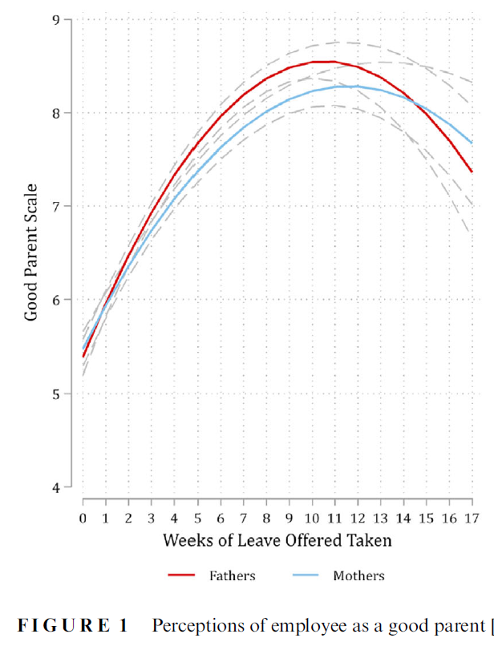
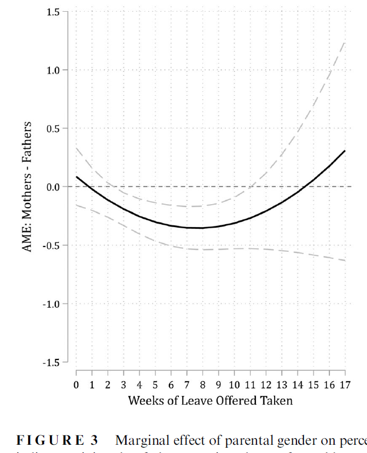

Nominal X Continuous interactions are perhaps the prototypical interaction effect (and the examples above show: separate prediction lines where each line represents a different group)
Plots are the most effective way to show these
Do not use the coefficient on the interaction (product) term as the test of interaction
Must use the 1st and 2nd difference approach for all nonlinear models (including nonlinear effects with linear regression)
Absent a theoretically important region of your data, average effects are appropriate
But remember that the effects will vary in other regions of the data—always test for interaction where it is most relevant for your research question
Why you should ignore the β coefficients when testing nonlinear interaction effects
(TESS03 - Analysis Dataset for TESS01 - Main Paper)
*Binary DV: support for legal marriage modellogit Bmarry i.cond##c.love10 rfem age rce_wht ed_coll /// ed_hs inc_50k married childyn children ideo evangel /// mainline blackprot catholic ofaithV2, or
library(haven) # import Stata data and labelslibrary(dplyr) # data manipulationlibrary(ggplot2) # graphslibrary(modelsummary) # regression tableslibrary(marginaleffects) # predictions and marginal effectslibrary(cleanplots) # graph schemecleanplots_defaults()love <-read_dta("https://tdmize.github.io/data/data/doan_love_SF.dta")# Keep model variables; drop any missing datalove <- love[c("Bmarry", "cond", "love10", "rfem", "age", "rce_wht", "ed_coll","ed_hs", "inc_50k", "married", "childyn", "children", "ideo", "evangel","mainline", "blackprot", "catholic", "ofaithV2")]love <- love[complete.cases(love), ] |>mutate(cond =as_factor(cond))# Binary DV: support for legal marriage modelmarry <-glm(Bmarry ~ cond * love10 + rfem + age + rce_wht + ed_coll + ed_hs + inc_50k + married + childyn + children + ideo + evangel + mainline + blackprot + catholic + ofaithV2, data = love, family =binomial(link ="logit"))modelsummary(marry, exponentiate =TRUE, stars =c("*"= .05, "**"= .01, "***"= .001),coef_omit ="rfem|age|rce_wht|ed_|inc_50k|married|child|ideo|evangel|mainline|blackprot|catholic|ofaith")
(1)
* p < 0.05, ** p < 0.01, *** p < 0.001
(Intercept)
1376.326**
(3466.182)
condGay
0.001**
(0.003)
condLesbian
0.009*
(0.021)
love10
1.198
(0.429)
condGay × love10
1.298
(0.479)
condLesbian × love10
1.009
(0.373)
Num.Obs.
501
AIC
380.5
BIC
469.0
Log.Lik.
-169.229
F
5.010
RMSE
0.33
If we approached the interaction effect from this nonlinear model as we would for linear effects, the conclusion would be that: the effect of love is no different for gay and lesbian couples, compared to the effect of love for heterosexual couple
This is wrong.
Plot the predictions
The presence of interaction terms in the model does not change the code for plotting predictions at all
Can accumulate tests into a single table with metest
*Accumulate all 2nd diffs into a single metest tablemetest, clearqui metest 2 - 1, add rowname("Gay - Hetero")qui metest 3 - 1, add rowname("Lesbian - Hetero")qui metest 2 - 3, add rowname("Gay - Lesbian")metest, title("2nd difference of effect of love, by couple type")
2nd difference of effect of love, by couple type
| estimate se pvalue
---------------------------------+--------------------------------
Gay - Hetero | 0.068 0.013 0.000
Lesbian - Hetero | 0.031 0.017 0.063
Gay - Lesbian | 0.037 0.019 0.049
In R, use avg_comparisons to calculate the MEs (1st differences)
# Changes in continuous IVs centered on the observed values, like mecompareoptions(marginaleffects_contrast_direction ="center")# MEs (1st differences)avg_comparisons(marry, variables ="love10", by ="cond",newdata =datagrid(cond = unique, grid_type ="counterfactual"))
The effect of love is stronger for gay couples than for heterosexual couples, indicating an interaction effect (2nd diff. = 0.068, p < .001).
Etc.
See additional example interpretations under “Example write-up” below
Plotting the “other side” of the interaction
Conceptually, it is useful to specify a focal IV and a moderating IV
This is mostly a theoretical distinction, but can influence the test with nonlinearities
Usually, the variable that comes first in your research question/hypothesis is the focal IV; the variable whose effect it (may) vary across is the moderating IV
RQ ex: Do perceptions of love have different effects for varying couple types?
H ex: Perceptions of love should have a stronger effect for gay couples compared to its effect for heterosexual couples.
RQ ex: Does aging lead to declining physical health at equal rates for individuals from different racial-ethnic backgrounds?
H ex: Aging will have a stronger (more negative) effect on physical health for Black than for White adults.
The examples above focus mostly on the effect of love as the focal IV, and couple type as the moderating IV
It is also important to examine the effect of the moderating IV, across values of the focal IV
Essentially, flip the focal and moderating variable
For a continuous X nominal interaction: calculate the marginal effect (ME) of the nominal IV across the range of the continuous IV and plot it
Note for this example because our nominal IV has 3 categories we have to pick a reference category and then plot two lines which are the differences from the reference
In Stata, calculate ME of nominal IV across range of continuous IV using margins
Plot with marginsplot
*7.3.b - Effect of sexual orientation (heterosexual vs [gay & lesbian])* overrangeof loveestrestore marry
(results marry are active now)
qui margins, dydx(cond) at(love=(0(0.5)10))marginsplot, recastci(rline) ci1opts(lpat(dash) col(eltblue*.4)) /// ci2opts(lpat(dash) col(gs10*.4)) /// plot1op(lcol(eltblue) msym(none) lwid(medthick)) /// plot2op(lcol(gs10) msym(none) lwid(medthick)) /// ylab(-1(0.2)0.2) xlab(0(1)10) yline(0, lcol(black)) ///title("[7.3.b] Difference in Support for Marriage: Gay/Lesbian vs Heterosexual Couple", size(medsmall)) ///subtitle("Effects Below Zero Indicate Lower Support for Gay/Lesbian Couple's Marriage Rights", size(small)) ///ytitle("Pr(Support): Gay/Lesbian - Heterosexual") ///legend(order(3 "Gay vs Hetero" 4 "Lesbian vs Hetero") pos(6) row(1))
Variables that uniquely identify margins: love10 _deriv
In R, use plot_comparisons
# 7.3.b - Effect of sexual orientation (heterosexual vs [gay & lesbian])# over range of love (MEs saved and passed to ggplot to draw both lines in one panel)mes <-avg_comparisons(marry, variables ="cond", by =c("love10", "contrast"),newdata =datagrid(love10 =seq(0, 10, .5), grid_type ="counterfactual"))ggplot(mes, aes(x = love10, y = estimate, color = contrast, fill = contrast)) +geom_ribbon(aes(ymin = conf.low, ymax = conf.high), alpha = .2, color =NA) +geom_line(linewidth =1) +geom_hline(yintercept =0) +scale_color_manual(values =c("#8FC6EB", "#909090"),labels =c("Gay vs Hetero", "Lesbian vs Hetero")) +scale_fill_manual(values =c("#8FC6EB", "#909090"),labels =c("Gay vs Hetero", "Lesbian vs Hetero")) +scale_x_continuous(breaks =0:10) +scale_y_continuous(breaks =seq(-1, .2, .2)) +coord_cartesian(ylim =c(-1, .2)) +labs(title ="[7.3.b] Difference in Support for Marriage: Gay/Lesbian vs Heterosexual Couple",subtitle ="Effects Below Zero Indicate Lower Support for Gay/Lesbian Couple's Marriage Rights",x ="How in love?", y ="Pr(Support): Gay/Lesbian - Heterosexual", color =NULL, fill =NULL)
*Recall this is a direct test of gay vs heterosexual couple: if the 95% confidence interval does not overlap zero: the group difference is statistically significant at p < 0.05
Example write-up
Perceptions of how in love a couple is have differential effects on how supportive someone is of legal marriage rights, depending on the sexual orientation of the couple. For heterosexual couples, perceptions of love have no effect on support for marriage (∆heterosexual p = ns). This is because heterosexual couples receive overwhelming support for legal marriage regardless of whether someone sees them as not in love at all (Pr = 0.97) or whether they see them as extremely in love (Pr = 0.99; see red line in Figure 1). Perceptions of love have a relatively small but significant effect on support for marriage of lesbian couples (∆lesbian = 0.033 p < 0.05). There is a large positive effect of love for gay couples (∆gay = 0.071 p < 0.001). For example, support for legal marriage rises drastically over the range of love, from a low of just 0.10 to a high of 0.79 for gay couples who are viewed as extremely in love (see blue line in Figure 1). The effect of love is stronger for gay men than for heterosexual couples (2nd difference = 0.068; p < 0.001) and for gay men compared to lesbian couples (2nd difference = 0.037; p < 0.05). However, it is important to note that despite the strong increase in support for marriage for gay couples as perceptions of love increase, support for a gay couple’s marriage rights is never equal to support for heterosexual couple’s marriage rights (see Figure 2).


*I like including both graphs in a single paper (often as separate panels) to help the reader follow what the second graph shows. Example from Petts, Kaufman, and Mize 2023
![[7.3.b] Marginal effect of couple type (gay vs heterosexual and lesbian vs heterosexual) on the probability of supporting marriage, across perceptions of love from 0 to 10, with confidence intervals and a line at zero. Both differences are negative throughout: the gay vs heterosexual difference rises from about -0.87 at love = 0 to about -0.2 at love = 10, and the lesbian vs heterosexual difference rises from about -0.6 to about -0.28; the lines cross near love = 8.](fig/cda-07_03_b-love.png)
![[7.3.b] Marginal effect of couple type (gay vs heterosexual and lesbian vs heterosexual) on the probability of supporting marriage, across perceptions of love from 0 to 10, with confidence intervals and a line at zero. Both differences are negative throughout: the gay vs heterosexual difference rises from about -0.87 at love = 0 to about -0.2 at love = 10, and the lesbian vs heterosexual difference rises from about -0.6 to about -0.28; the lines cross near love = 8.](7-3-nominal-continuous_files/figure-html/unnamed-chunk-6-1.png)